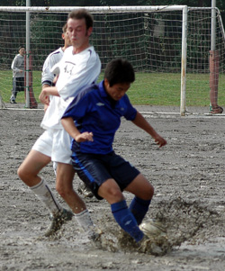
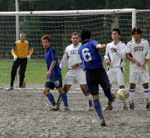
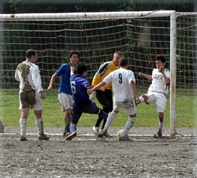

|
Oi Futo, Sun 29th Oct. Ok, so not really ballistic. More like the speed of a fat man crawling through ankle deep mud. And Jetro weren’t really atrocious, but I’ve wanted to use this purloined headline for ages and Jetro happen to have the right number of syllables, plus I don’t think any of them read these things so they’re a soft touch on the complaints front. Yes the only atrocious thing yesterday was the pitch.
A night of heavy rain had turned Oifuto Dirt into Oifuto Mud. Picture if you will the Battle of the Somme in early autumn 1916.
“Message from the front line Sir, we’ve scored!”
“Very good Wadkins, tell the lads to drop back over the half-way line and we’ll bally well have another go at them.” And so on…
The game itself was anything but a war however as both teams tried not to make any rash challenges that could have been worsened by the surface (Though a Jetro striker did mistake Ian for the ball at one point and gave him a thumping volley on the knee. Ian, who had to go off as a result, thought his day couldn’t get any worse until he was informed that it was his turn to wash the strips!)
Such basic skills as clearances, crosses and shots were extremely difficult due to the likelihood of you falling on your arse into a brown choleric looking swamp if you put any weight on your standing foot. Thus there were very few shots on goal and almost no crosses from open play.
Jetro are quite like Forrest Gump’s box of chocolates, in that you never know what you’re going to get. Sometimes they look like the best team in the league, other times that they can’t quite be bothered. This time was something in-between.
 Sala started well, without creating any real chances, but it became rapidly clear that quick, direct football was going to be more effective than Jetro’s preferred possession building.
The first half was a long laborious affair with an exclamation mark at the end in the shape of Toby’s last minute header.
Brookey whipped in an excellent in-swinging corner that eliminated the goalkeeper and Toby rose well to head home from a couple of yards out. Headed, using his head, definitely not his arm, not even slightly…1v0 and Sala went into the break a much happier bunch of swamp monsters.
The second half was a much more open affair as sections of the pitch began to dry out a little. Sala took the game by the scruff of the neck from the outset and pushed the Jetro backline hard. Several fouls were conceded around the box as defenders struggled to compete fairly in the air. One such foul on Toby right on the corner of the penalty box, left Sala a great position to attack a whipped free-kick. Brian, who replaced Andres at half time, stepped up and somewhat fortunately knocked it right over the keepers head and into the top corner. 2v0. Unlike goofy millionaire Ronaldhino, Brian, salt of the earth that he is, had the dignity to admit that it was a mis-hit cross (After about three minutes of contemplation on the subject)
 Gallagher had the ball in the net again mere minutes later, but a dubious offside call from the equally dubious Jetro linesman, cancelled out his close range finish.
The third was not long coming though, as from Sid’s long drop kick, Toby flicked expertly on and Charles ran into space before chipping the rather poorly positioned keeper. 3v0.
Sala made several changes at this point including myself for Giles. At that juncture I went to take a shower and so can only speculate as to what happened for the rest of the game.
I’m pretty sure that Dan made some kind of wonder save after Sid had been rounded. Also that Sid clawed a ball off the line during a goal mouth scramble. Did Andres get booked?
Scotty may well have hit a post. Peter came on and had a solid game on the right and Yusuke turned into a colossus at the back.
What is certain is that Jetro scored a scrappy goal in the last five minutes that, when the amount of mud that they got on their shirts scoring it is taken into consideration, they’ll probably wish they hadn’t.
Much better performance by Sala, but with the pitch a great equalizer, nobody will be taking much more away from this one than a kilo of mud on their boots.
Report by Roddy 'Not from this Planet' Charles
|